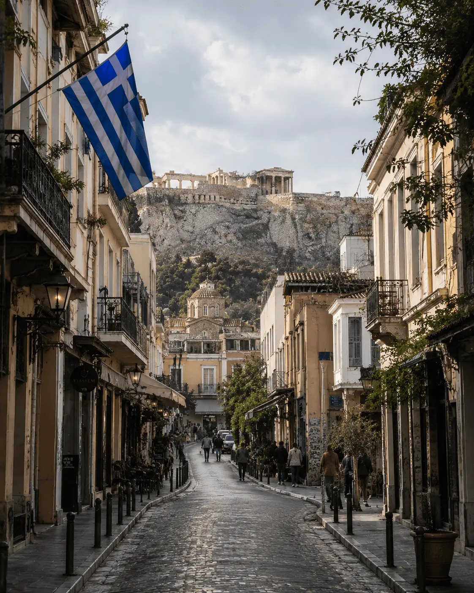
The Acropolis, the Parthenon and remarkable ancient ruins tell the story of Athens.
Traditional tavernas, mezze, Mediterranean flavors and authentic local specialties.
Acropolis views, spectacular sunsets and a unique Mediterranean atmosphere.
Football, basketball and the legacy of the Olympic Games are part of the city's identity.
Athens is one of the world's oldest capitals. The birthplace of democracy, it blends ancient monuments, lively neighborhoods, Mediterranean culture and the unique Greek way of life.
From the Acropolis to Plaka, from Monastiraki to the Athens Riviera, each district has its own personality and offers a different way to experience the Greek capital.
Between legendary archaeological sites, local cuisine, spectacular viewpoints and excursions to the Greek islands, Athens appeals equally to history lovers and travelers seeking sunshine and authentic experiences.
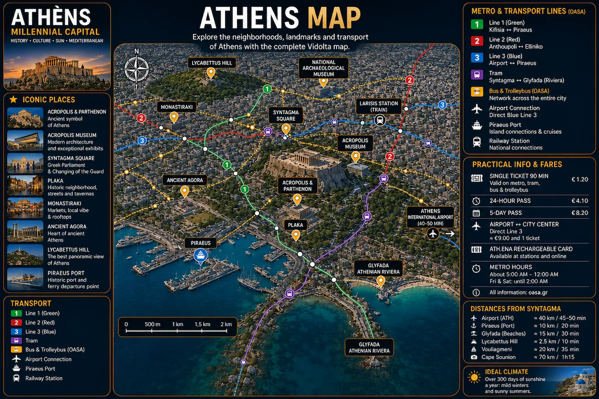
From the treasures of Ancient Greece and breathtaking sunsets over the Aegean Sea to island cruises and legendary archaeological sites, Athens offers some of the Mediterranean's most unforgettable experiences.
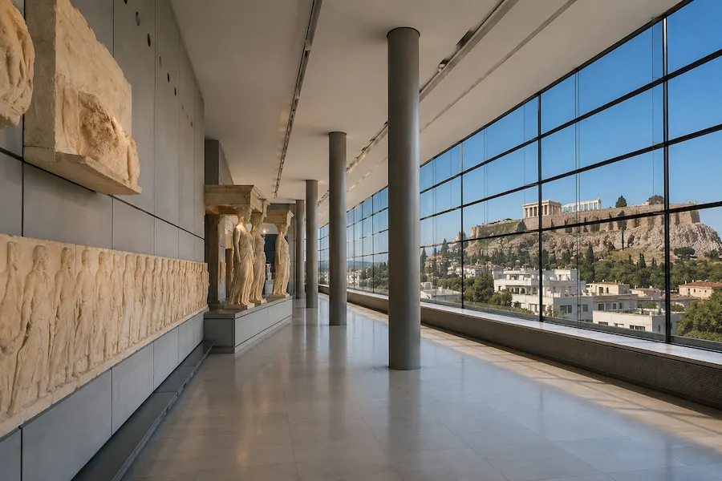
Located beneath the Parthenon, the Acropolis Museum displays thousands of remarkable artifacts from Ancient Greece and offers a deeper understanding of the country's most iconic archaeological site.
Book Your Visit →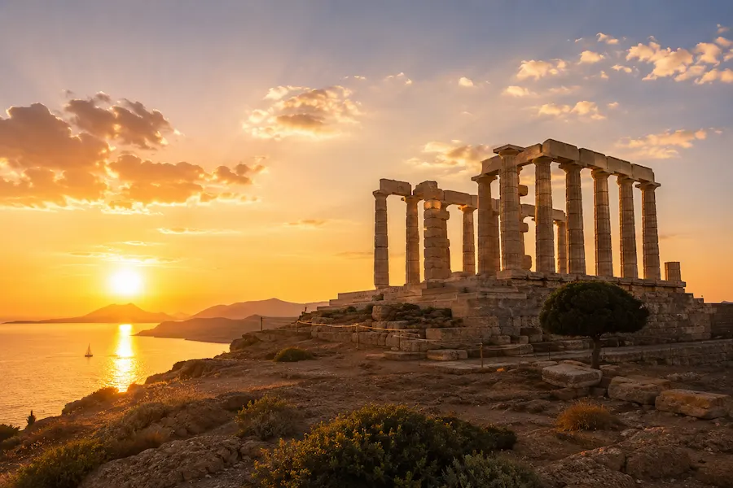
Perched above the Aegean Sea, the Temple of Poseidon offers one of Greece's most spectacular sunsets. A must-do excursion from Athens.
Book the Excursion →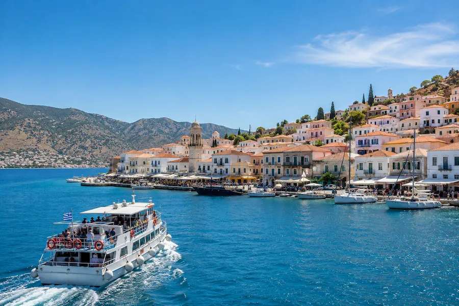
Set sail from Athens for a full-day cruise across the Aegean Sea to discover Hydra, Poros and Aegina. A unique way to experience the beauty and relaxed lifestyle of the Greek islands.
Book the Cruise →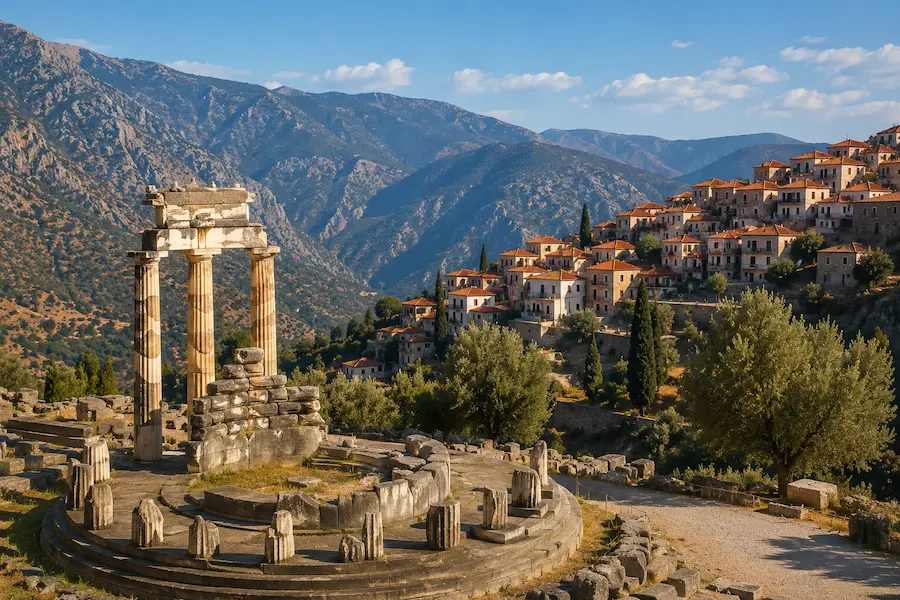
Once considered the center of the ancient world, Delphi is one of Greece's most impressive archaeological sites, where mythology, temples and mountain landscapes come together.
Book the Excursion →The Athens Metro provides quick access to the Acropolis, Monastiraki, Plaka, Piraeus and the city's main attractions.
Explore →Rent a bike and explore Athens at your own pace. A pleasant way to discover historic neighborhoods, lively squares and the city's grand avenues.
Rent a Bike →From the Port of Piraeus, ferries make it easy to reach the Greek islands and explore the Aegean Sea from Athens.
Explore →Travel comfortably from Athens International Airport to your hotel with a private transfer available at any time of the day.
Book Your Transfer →Athens' most iconic neighborhood. Located at the foot of the Acropolis, Plaka charms visitors with its cobbled streets, colorful houses, traditional tavernas and authentic Greek atmosphere.
Perfect for a first visit. Markets, restaurants, ancient landmarks and spectacular Acropolis views make this lively district an ideal base for exploring the Greek capital.
A trendy neighborhood known for its cafés, bars, street art and authentic atmosphere. An excellent choice for experiencing Athens' vibrant nightlife.
Athens' elegant district, filled with luxury boutiques, fine restaurants, art galleries and a sophisticated residential atmosphere. One of the city's most exclusive areas.
The perfect choice for combining sightseeing with seaside relaxation. The coastal resorts offer beaches, marinas, beautiful sunsets and hotels overlooking the Aegean Sea.
Compare accommodation in Athens' best neighborhoods and find the perfect hotel for your stay.
From traditional tavernas and Acropolis-view rooftops to Greek cooking classes and gourmet food tours, gastronomy is one of the highlights of any trip to Athens.
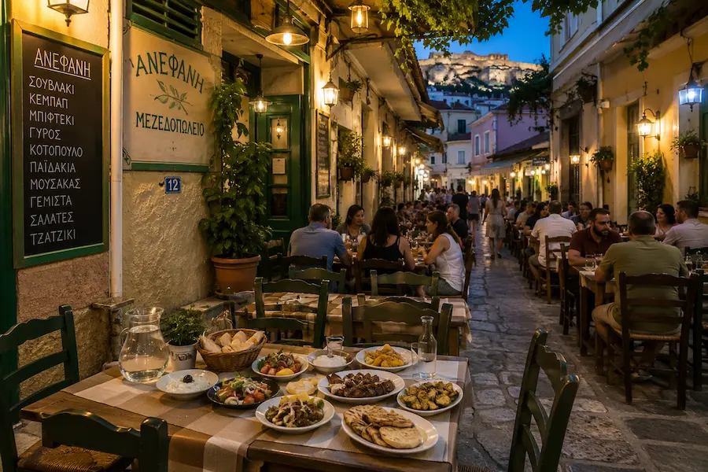
Athens' traditional tavernas are the perfect place to discover Greek cuisine in a friendly atmosphere while enjoying mezze, grilled specialties, tzatziki and local flavors.
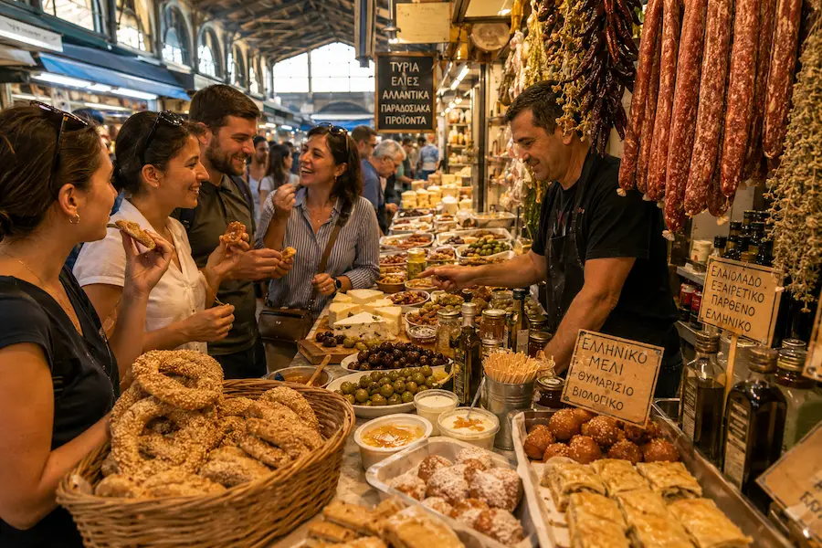
Discover the best Greek specialties with a local guide. A delicious experience that combines authentic flavors with a walk through Athens' historic neighborhoods.
Discover the Food Tour →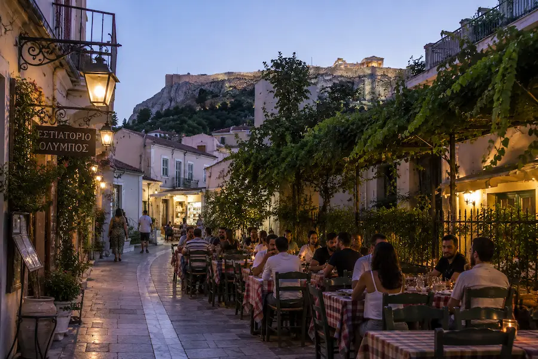
At the foot of the Acropolis, Plaka is home to some of Athens' finest terraces and traditional tavernas, all set in an authentic Greek atmosphere.
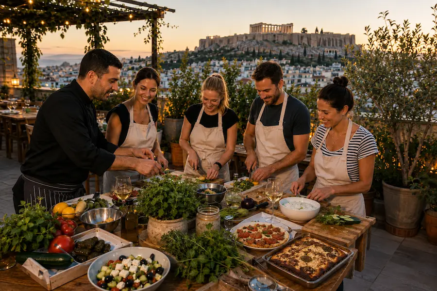
Learn to prepare classic Greek dishes with a local chef before enjoying your meal on a rooftop with breathtaking views over Athens. A delicious and unforgettable experience.
Book the Class →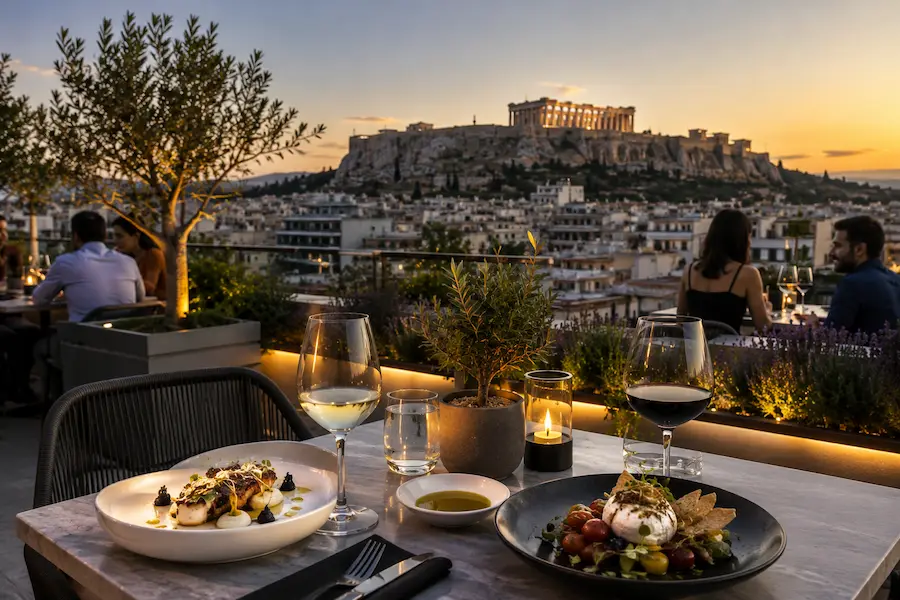
Watching the illuminated Acropolis from one of Athens' rooftop terraces is one of the city's most unforgettable experiences.
Discover the Best Rooftops →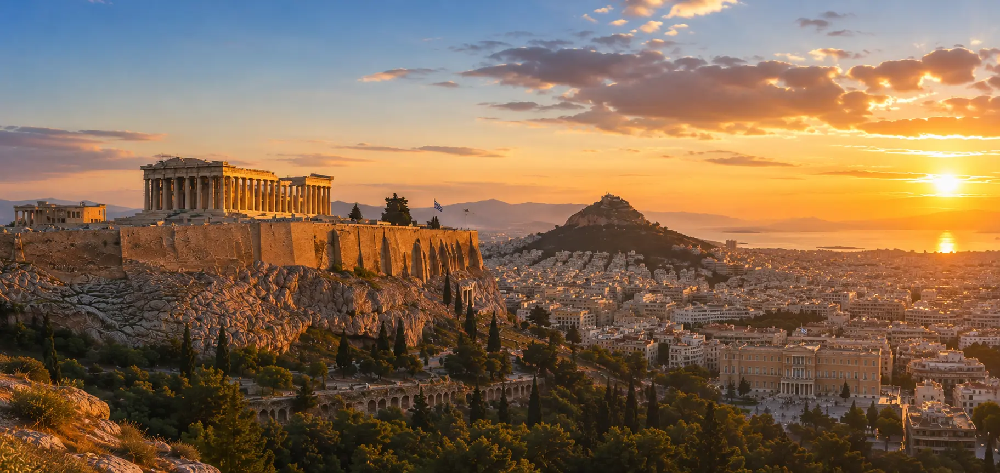
Discover Greece's most iconic monument alongside the renowned Acropolis Museum and immerse yourself in the fascinating history of ancient Athens.
Book Your Visit →Explore Athens' most famous landmarks on a panoramic tour including the Panathenaic Stadium, Syntagma Square, the Temple of Olympian Zeus and the city's historic highlights.
Discover Athens →The political heart of modern Greece, Syntagma Square is home to the famous Changing of the Guard ceremony in front of the Hellenic Parliament, one of the country's most photographed traditions.
Climb above the city to enjoy breathtaking views of the Acropolis, Athens' rooftops and the Aegean Sea from the capital's most spectacular viewpoints.
Explore the Viewpoints →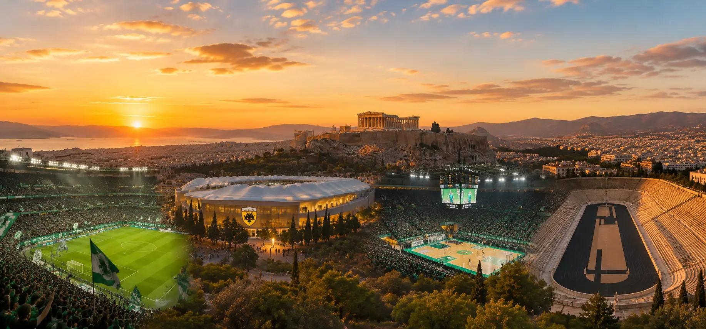
One of Greece's most successful clubs, Panathinaikos offers an unforgettable football atmosphere and one of the country's greatest sporting rivalries.
View Fixtures →AEK Athens is one of Greece's historic football clubs. Its modern OPAP Arena hosts some of the country's most passionate supporters in an electric atmosphere.
View Fixtures →Panathinaikos is one of Europe's greatest basketball clubs. EuroLeague nights at the OAKA are among the most spectacular sporting experiences on the continent.
Official Tickets →Built entirely from marble, the Panathenaic Stadium hosted the first modern Olympic Games in 1896 and remains one of the world's most iconic sporting landmarks.
Discover →From Athens, just a few hours are enough to reach some of Greece's most spectacular destinations. Ancient temples overlooking the Aegean Sea, crystal-clear islands, legendary sanctuaries and breathtaking cliff-top monasteries offer the perfect complement to a stay in the Greek capital.
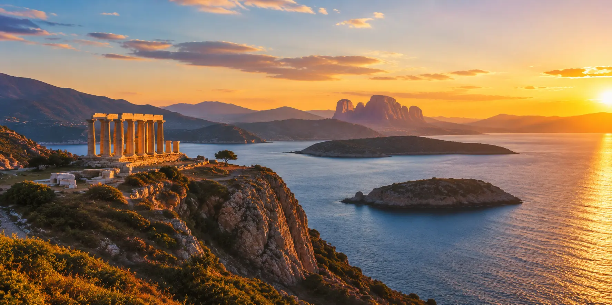
Admire one of Greece's most breathtaking sunsets overlooking the majestic Temple of Poseidon. A must-do excursion along the spectacular Athens Riviera.
🌅 Watch the Sunset →Spend a day sailing between turquoise waters, secluded beaches, authentic villages and a delicious lunch at sea while discovering the beautiful islands of the Saronic Gulf.
⛵ Join the Cruise →Discover the legendary Sanctuary of Apollo, once believed to be the center of the ancient Greek world, surrounded by breathtaking mountain scenery.
🏛️ Discover Delphi →Discover the famous monasteries perched atop towering rock formations, one of Greece's most spectacular and unforgettable landscapes.
🪨 Explore Meteora →Greek is the official language. English is widely spoken in hotels, restaurants, public transport and at the city's main tourist attractions.
The euro (€) is used throughout Greece. Credit and debit cards are accepted almost everywhere, even for small purchases.
The metro provides easy access to the Acropolis, Monastiraki, Plaka, Syntagma and Piraeus. Exploring the historic center on foot is also highly enjoyable.
Three to four days are enough to discover Athens' main landmarks. A full week is ideal if you also want to visit Cape Sounion, Delphi or enjoy a cruise to the Greek islands.
Spring and autumn offer the most pleasant temperatures for exploring Athens while enjoying long, sunny days.
Expect to spend around €90 to €220 per person per day, depending on your travel style, accommodation and excursions.
A few common mistakes can make a trip to Athens less enjoyable, especially during the hottest and busiest months of the year.
In summer, temperatures can become extremely high around the ancient monuments, where shaded areas are limited. Plan your visit early in the morning or later in the afternoon.
Acropolis tickets, Cape Sounion excursions and many popular cruises often sell out during peak tourist season.
Athens is best explored on foot, with plenty of hills, uneven pavements and stone paths around the Acropolis. Comfortable walking shoes are highly recommended.
Choosing accommodation far from Plaka, Monastiraki or Syntagma can significantly increase travel time during a short stay.
The Acropolis, museums, historic neighborhoods and panoramic viewpoints deserve time. A packed schedule often leaves little opportunity to enjoy Athens' unique atmosphere.
Ferry schedules and some excursions may be affected by weather conditions. Always leave enough time before your return flight.
Three days are enough to discover the city's main landmarks and historic neighborhoods. Four to five days are ideal if you also want to visit Cape Sounion, the Athens Riviera or take a cruise to the Greek islands.
Plaka and Monastiraki are the most convenient areas for a first stay thanks to their proximity to the Acropolis, restaurants and Athens' main historical attractions.
Yes. English is widely spoken in hotels, restaurants, public transport and tourist attractions. Learning a few Greek words is always appreciated, but not essential.
Absolutely. Traditional tavernas, bakeries and local eateries serve delicious souvlaki, mezze and classic Greek dishes at very reasonable prices.
Yes. Booking the Acropolis and the most popular excursions in advance is strongly recommended, especially between May and September, as well as during weekends and school holidays.
Yes. Ancient monuments, museums, parks and seaside excursions make Athens a great destination for families. During the hottest months, it's simply best to plan activities at a more relaxed pace.
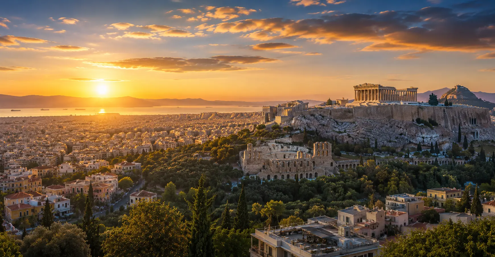